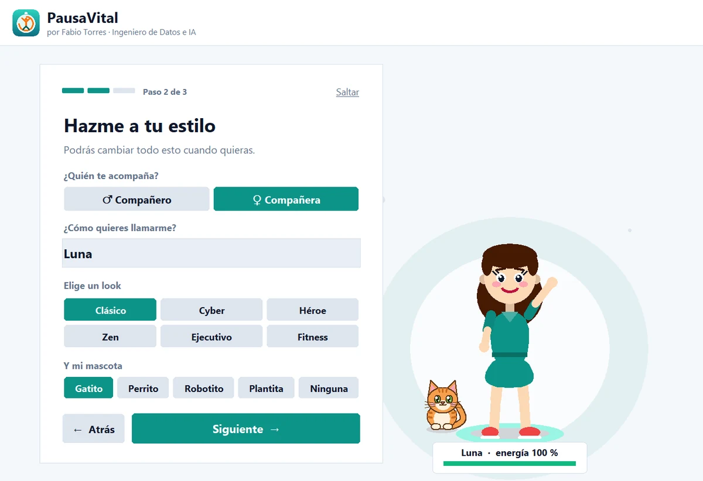
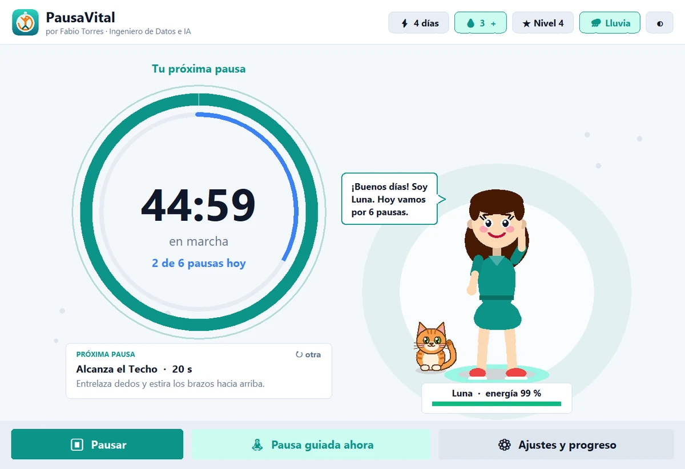
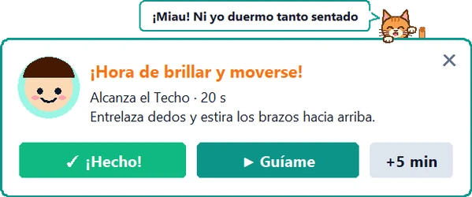
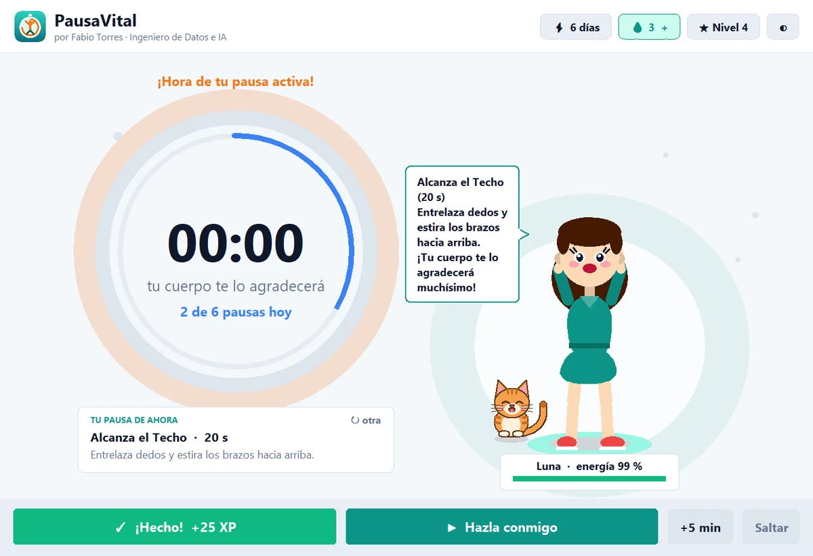
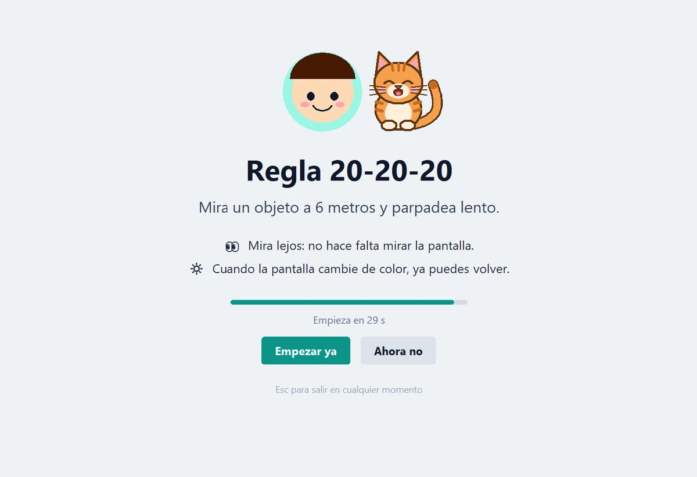
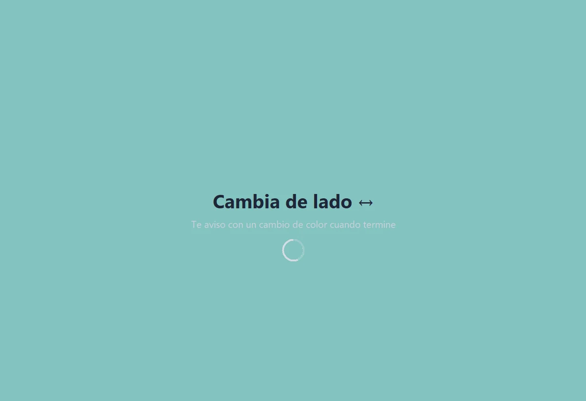
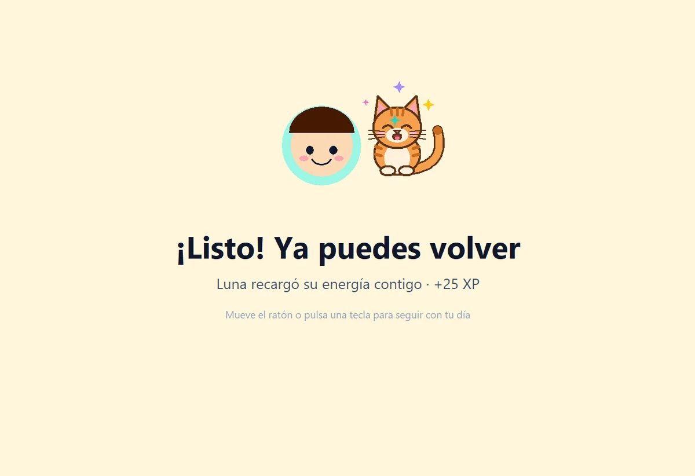
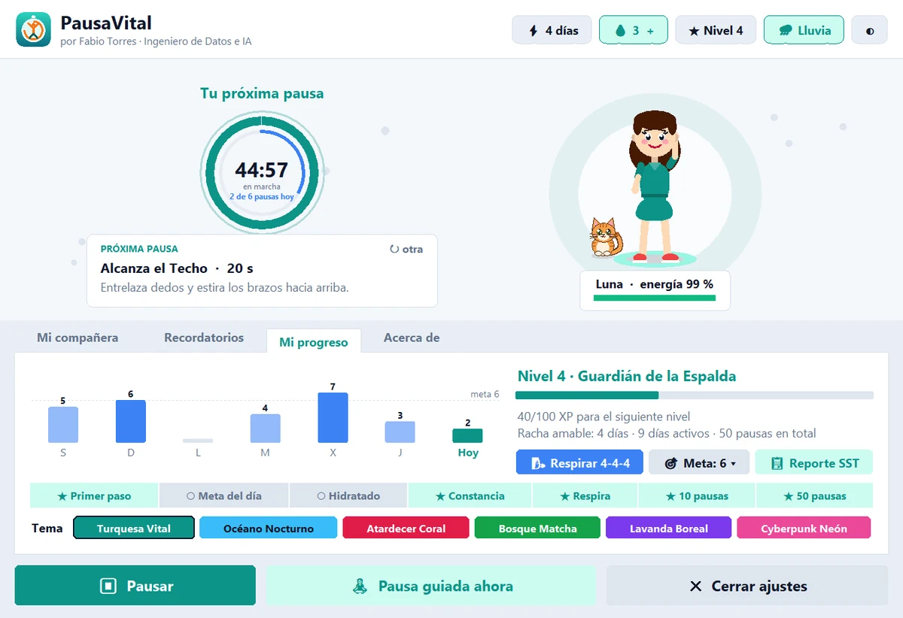

1
Elige quién te acompaña
Una bienvenida de 3 pasos: compañero o compañera, su nombre, su estilo, su mascota y cada cuánto quieres moverte.
PausaVital es un programa gratuito para tu computador. Un compañero o compañera animada te recuerda hacer pausas activas de 20 segundos (estirarte, descansar la vista, hidratarte) y las hace contigo, paso a paso.
¿Sin permisos para instalar? Usa la versión portable (.zip).


Lo configuras en menos de un minuto y luego solo aparece cuando toca moverse.

Una bienvenida de 3 pasos: compañero o compañera, su nombre, su estilo, su mascota y cada cuánto quieres moverte.

Cierra la ventana: PausaVital sigue activo junto al reloj de Windows. Te avisa 30 segundos antes, y si te levantaste por tu cuenta, lo nota y no te interrumpe.

Te explica el ejercicio en una frase, la pantalla queda en calma y tú apartas la vista durante 15 a 30 segundos. Al terminar, celebra contigo: energía al 100 % y un paso más hacia tu meta.
Descansar la vista mientras lees instrucciones en la pantalla no tiene sentido. Por eso, durante la pausa no hay nada que leer: PausaVital te guía con cambios de color que se notan de reojo, aunque trabajes con el sonido apagado. Tú eliges la pantalla de pausa: clara (blanco grisáceo) u oscura.
Unos segundos para leer el ejercicio y saber cuál será la señal. Puedes empezar ya o dejarlo para después.

Mira lejos, estírate o cierra los ojos. Un destello te indica cambiar de lado, y en la respiración un círculo de color crece al inhalar y baja al exhalar.

La pantalla cambia de color con dos pulsos (o se ilumina, si usas la pantalla oscura) y lo notas de reojo. Si tienes el sonido activo, suena además una campanita. Al tocar el ratón, vuelves a tu trabajo.
Las mejores apps de bienestar te acompañan, no te regañan. PausaVital aplica esa misma idea a tu jornada frente a la pantalla.
Un meta-análisis de 22 estudios encontró que las pausas cortas (de 10 minutos o menos) aumentan la vitalidad y reducen la fatiga durante el trabajo. PausaVital las hace fáciles: duran entre 15 y 30 segundos.
Fuente: Albulescu et al., PLOS ONE (2022)Incluye la regla 20-20-20: cada 20 minutos, mira algo a unos 6 metros durante 20 segundos. Es la recomendación más conocida para la fatiga visual digital. Por eso, durante la pausa la pantalla queda en calma y te avisa con un cambio de color: no tienes que mirarla para saber cuándo volver.
Fuente: American Academy of OphthalmologyCrear un hábito toma semanas, y saltarse un día no arruina el proceso. Por eso en PausaVital los fines de semana no rompen tu racha, saltarse una pausa no tiene castigo y tu personaje nunca se pone triste por ti.
Fuente: Lally et al., European Journal of Social Psychology (2010)Aviso 30 segundos antes, posponer en un clic, silenciar una hora para reuniones y detección de descansos: si te alejas 5 minutos del computador, el reloj se reinicia solo.
Inspirado en las buenas prácticas de herramientas como Stretchly y LookAway.PausaVital promueve hábitos saludables. No es un dispositivo médico ni sustituye la orientación de un profesional de la salud.
12 looks (6 en cada versión), peinados, vestido o pantalón, accesorios, colores y 4 mascotas con vida propia (gatito, perrito, robotito o plantita) que juegan, duermen, celebran contigo y se asoman en cada aviso.
Vista, cuello, espalda, muñecas, piernas y respiración 4-4-4, guiados con señales de color para que no tengas que mirar la pantalla.
Un clic para contar cada vaso de agua (también desde el ícono junto al reloj). Si llevas 3 horas trabajando sin beber agua, tu próxima pausa te lo recuerda.
Gráfica de tu semana, niveles, medallas y una racha amable que celebra tu constancia.
Claros y oscuros: Turquesa, Océano, Coral, Bosque, Lavanda y Cyberpunk. Sonidos suaves, nada estridentes.
Sin cuentas, sin internet, sin anuncios y sin rastreo. Tu progreso se guarda solo en tu computador.
Si tu micrófono o tu cámara están en uso (Teams, Meet, Zoom) o estás presentando, la pausa espera y aparece cuando cuelgas.
Lluvia suave, olas en calma o un cuenco tibetano de fondo, a volumen bajo. Se calla solo durante tus llamadas. También puedes usar tus propios audios.
Desde Mi progreso generas una hoja imprimible con tus pausas e hidratación de los últimos 14 días, por si Seguridad y Salud en el Trabajo te pide evidencia.
Cinco tonos para tus avisos: desde un motivador cálido hasta un sargento con energía al 200%. Prueba cada uno:
Pequeños movimientos crean grandes cambios. ¡Arriba ese ánimo! Estira y sonríe.

No necesitas Python ni nada adicional. Se instala solo para tu usuario, sin permisos de administrador.
Pulsa Descargar gratis. Se guardará Instalar_PausaVital.exe (8,9 MB) en tu carpeta de Descargas.
Haz doble clic en el archivo. Si Windows muestra un aviso azul, sigue la guía de la derecha: es normal en programas nuevos y gratuitos.
Se crea el ícono en tu Escritorio y en el menú Inicio, y PausaVital se abre con su bienvenida.
Ve a Configuración › Aplicaciones › PausaVital › Desinstalar. Sin rastros.
Sí, completamente: sin versión «premium», sin anuncios y sin pedirte datos. Es software gratuito creado por Fabio Torres para que más personas cuiden su salud frente al computador.
Sí. No se conecta a internet, no tiene anuncios, se instala solo en tu usuario sin permisos de administrador y puedes verificar la huella SHA-256 del instalador. El aviso azul de Windows aparece porque es un programa nuevo sin firma comercial, no porque tenga algún problema.
No. PausaVital funciona sin conexión y no tiene cuentas. Tu nombre, tu compañero y tu progreso se guardan solo en tu computador.
No. Cuando cierras la ventana, PausaVital sigue trabajando en segundo plano como un pequeño ícono junto al reloj de Windows (si no lo ves, pulsa la flecha ^ de esa zona). Desde allí te avisa cuando toca tu pausa. Haz clic en el ícono para abrirlo, o clic derecho para hacer una pausa guiada, silenciar los avisos o salir. Si lo instalas con la opción recomendada, además se abre solo y en silencio al encender el computador.
No. Si tu micrófono o tu cámara están en uso, o estás presentando, la pausa queda en espera y aparece unos segundos después de que cuelgas. Lo detecta en tu propio equipo, sin escuchar ni grabar nada. Además te avisa 30 segundos antes, puedes posponer 5 minutos o saltar la pausa sin castigo, y silenciar los avisos durante una hora. Puedes desactivar el modo reunión en Ajustes › Recordatorios.
No, y es mejor que no lo hagas. Antes de empezar, PausaVital te explica el ejercicio en una frase. Luego la pantalla queda en calma y tú apartas la vista. Las señales son cambios de color, que se notan con el rabillo del ojo: un destello para cambiar de lado y dos pulsos de color al terminar. Así funciona aunque trabajes con el sonido apagado; si lo tienes activo, también suena una campanita. En Ajustes › Recordatorios eliges la pantalla de pausa clara (blanco grisáceo) u oscura, o vuelves a la guía clásica dentro de la ventana.
Por ahora solo para Windows 10 y 11.
¡Claro! Puedes instalarlo en todos los equipos que quieras. Los equipos de TI pueden hacer una instalación desatendida con Instalar_PausaVital.exe /silencioso. El uso interno es gratuito; para redistribuirlo, modificarlo o incluirlo en otro producto o servicio, escríbeme primero (ver la licencia más abajo).
No. PausaVital es la nueva versión de Pausas Activas Pro: al abrirlo por primera vez recupera automáticamente tu personaje, tus niveles y tu historial.
No. PausaVital es una herramienta para crear hábitos saludables. Si tienes dolor persistente, consulta con un profesional de la salud.
Puedes descargar e instalar PausaVital gratis en casa, en tu universidad o en todos los equipos de tu empresa. El código fuente es privado: para obtenerlo, modificarlo, redistribuir el programa o incluirlo en otro producto o servicio, solicita autorización por correo contando quién eres y para qué lo necesitas.
Si hablas de PausaVital o lo recomiendas, usa este crédito:
PausaVital — Creado por Fabio Torres, Ingeniero de Datos e IA
Leer la licencia completa · Solicitar el código o un permiso
Gratis, en español y listo en un minuto.
Descargar PausaVitalWindows 10 y 11 · 8,9 MBTambién disponible en GitHub Releases y como versión portable.